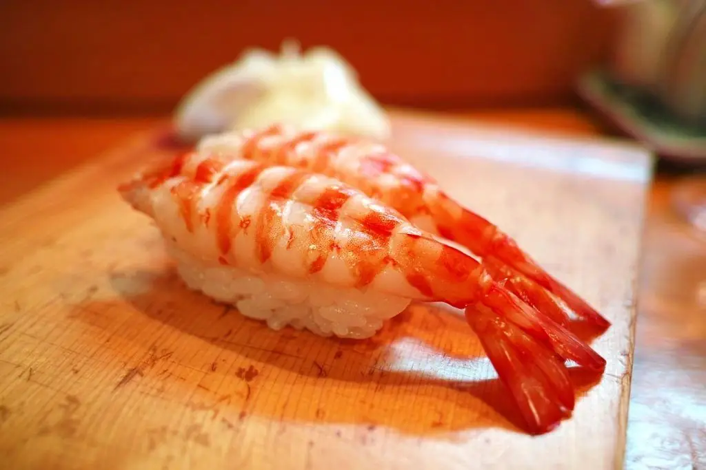
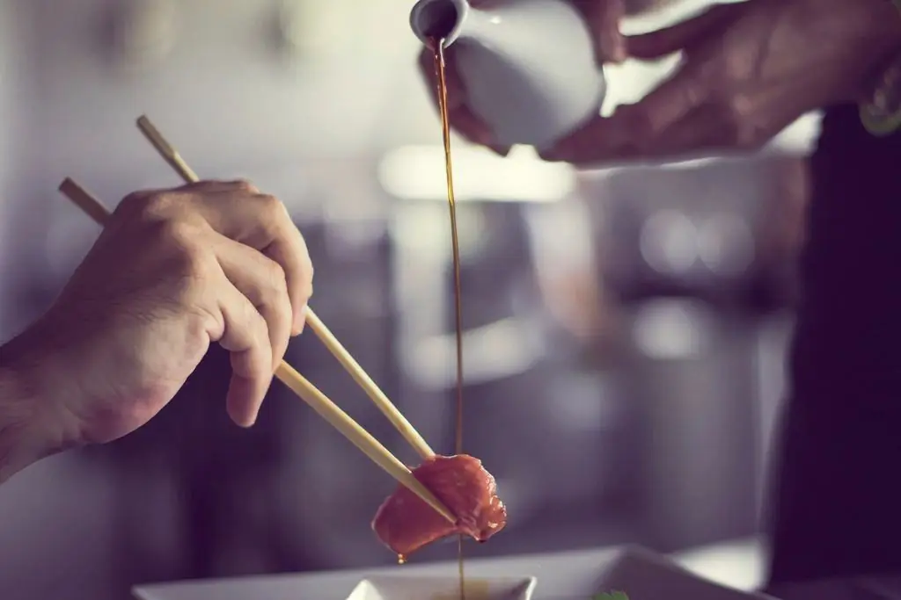
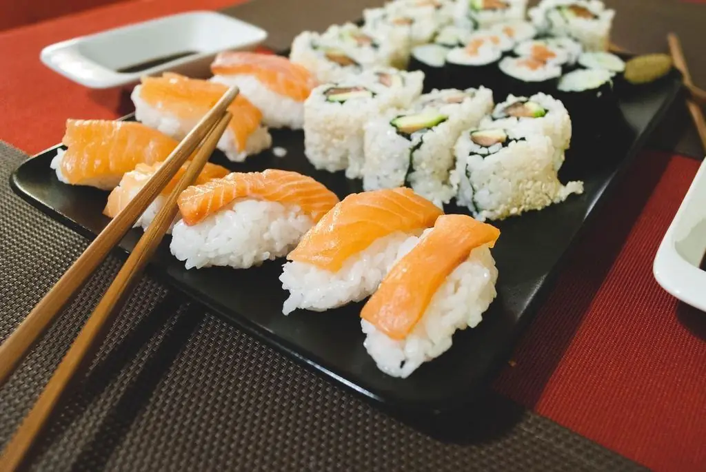
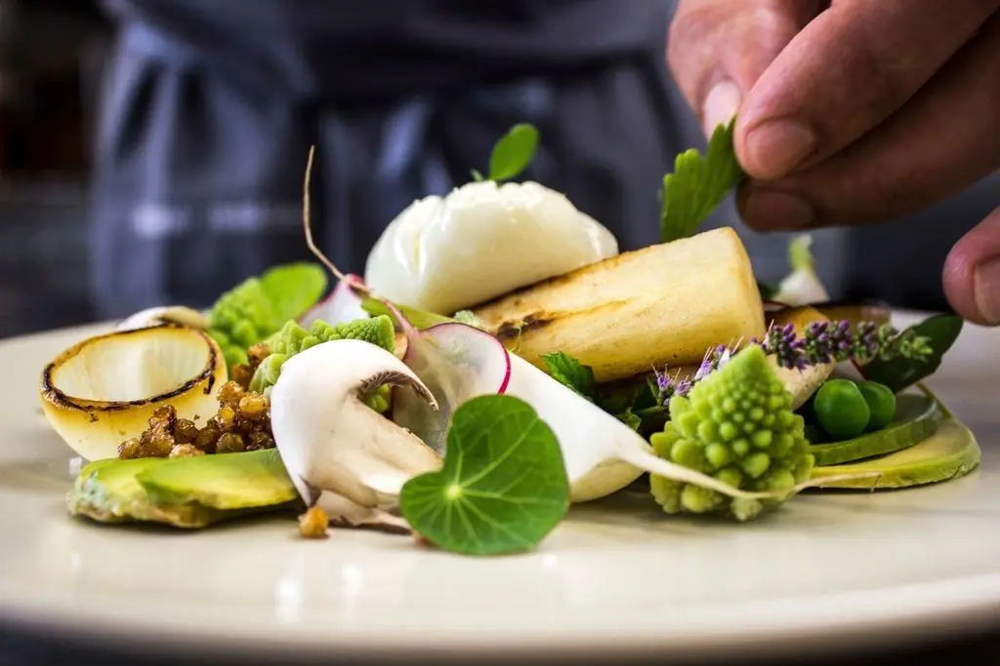

Lunch, mix och omakase
- Nr 001
Lunch vid disken
Dagens tio bitar eller poké, med allt som hör till.
- Misosoppa och sallad
- Grönt te och vatten
- Påfyllning av ingefära
- Serveras på under tio minuter
139 krvardagar 11–14 - Nr 002Mest beställd
Mix 12 bitar
Kockens val av nigiri och maki efter dagens leverans.
- Sex nigiri och sex maki
- Lax, hamachi och tonfisk
- Soja, wasabi och ingefära
- Glutenfri soja om du vill
229 kräta här eller ta med - Nr 003
Omakase
Åtta serveringar vid disken, en sittning på två timmar.
- Två sittningar: 18.00 och 20.30
- Tolv platser per sittning
- Dryckespaket 395 kr
- Bokas i förväg
695 krper person, tors–lör
Alla priser inklusive moms. Fråga personalen om allergener – vi har glutenfri soja.
Äta här eller ta med?
Lunch vardagar
Dagens sushi eller poké med misosoppa och sallad, klockan 11–14.
Läs merTake-away
Ring eller beställ i webbshopen och hämta efter femton minuter.
Läs merHela menyn
Nigiri, sashimi, maki och smårätter med priser.
Läs merOmakase vid disken
Åtta serveringar som kocken väljer, torsdag till lördag kväll.
Läs merSushifat till fest
Fat för 4–40 personer, beställ senast två dagar innan.
Läs merVegetariskt
Vegansk mix med marinerad aubergine, avokado och inlagd rättika.
Läs merAllergier
Glutenfri soja och rätter utan sesam – säg till när du beställer.
Läs merBoka bord
Boka bord eller en plats vid disken.
Läs mer
Gäster vid disken
Vi satt vid disken på omakasen och fick åtta rätter jag aldrig hade ätit förut. Den flamberade makrillen var bäst.
Sara L.UppsalaBeställer take-away varje fredag på vägen hem från jobbet. Den är alltid klar när jag kommer, och riset är fortfarande ljummet.
Johan P.SvartbäckenVi beställde fat till sextio gäster på en disputationsfest. Allt var märkt med allergener och det tog slut på en kvart.
Amira H.Uppsala


- Bilder
Från disken på Svartbäcksgatan
Se hela menynIllustrationsbilder 





Boka bord eller en plats vid disken
Vid disken ser du kocken skära och får varje bit direkt över bänken. Fyra bord hålls alltid lediga för den som kommer in utan bokning.

Illustrationsbilder
Senast från disken

Omakase även på torsdagar
Från oktober har vi två sittningar vid disken tre kvällar i veckan.
Läs mer
Boka bord eller plats vid disken
Skriv dag, tid och hur många ni är, och om ni vill sitta vid disken. Vi bekräftar med ett sms.